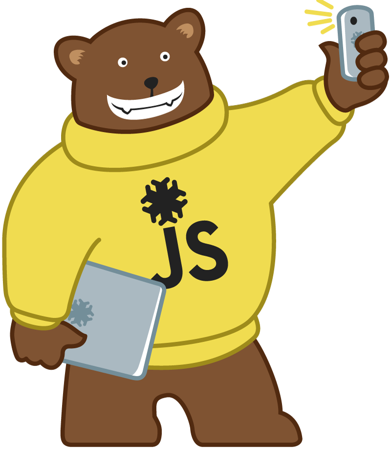
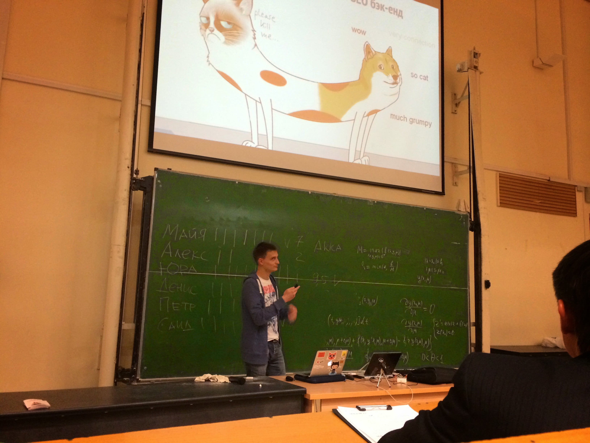
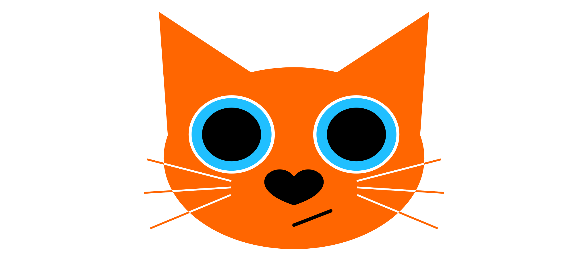

JSib – Знакомство и амбициозные планы
JSib – Знакомство и амбициозные планы

rdner
Денис Речкунов
Node.js-разработчик
Немного о себе

Node.js-разработчик во Flamp
.NET-разработчик в 2ГИС
Работал над
konfettin.ru
Автор фреймворка Catberry.js

Еще немного
Ext.js/node.js/.NET-разработчик в Enterra
Разрабатывал WebSCADA (Knockout.js, Ext.js и node.js)
Выпускник АлтГТУ (ФИТ, ПОВТ)
В школе писал чат (PHP, MySQL, JavaScript) – лучше не будем об этом
JSib Community
Для чего вообще JSib?
Сообщество – это всегда круто, потому что можно:
Делиться опытом
Узнавать новое
Пиарить свои проекты
Налаживать новые контакты
Общаться о технологиях за чашкой чая
К амбициозным планам
Когда и где собираемся?
Раз в 2 месяца
Два доклада по 40 минут
Суббота в 12:00
Антикафе "Самовар"
Формат
До 2-х докладов по 40 минут
По 15 минут на вопросы
Можно сообщить об интересующей теме
Можно выступить самому с докладом
Если докладов много – будем голосовать
Отчетность
Видео доклада загружается на YouTube
Презентации на SlideShare
Анонсы, новости и вот это всё в Facebook, ВКонтакте, Twitter
Контакты
Официальный хештэг – #jsibnsk
Twitter –
@jsibnsk
Facebook –
jsibnsk
ВКонтакте –
jsibnsk
SlideShare –
jsibnsk
YouTube –
JSib Community
Email –
jsib.nsk@gmail.com
Вопросы?
 rdner
rdner